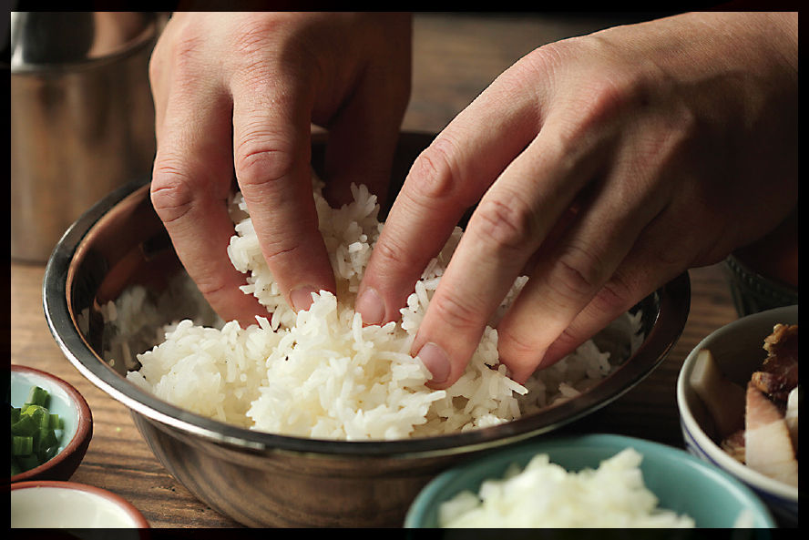
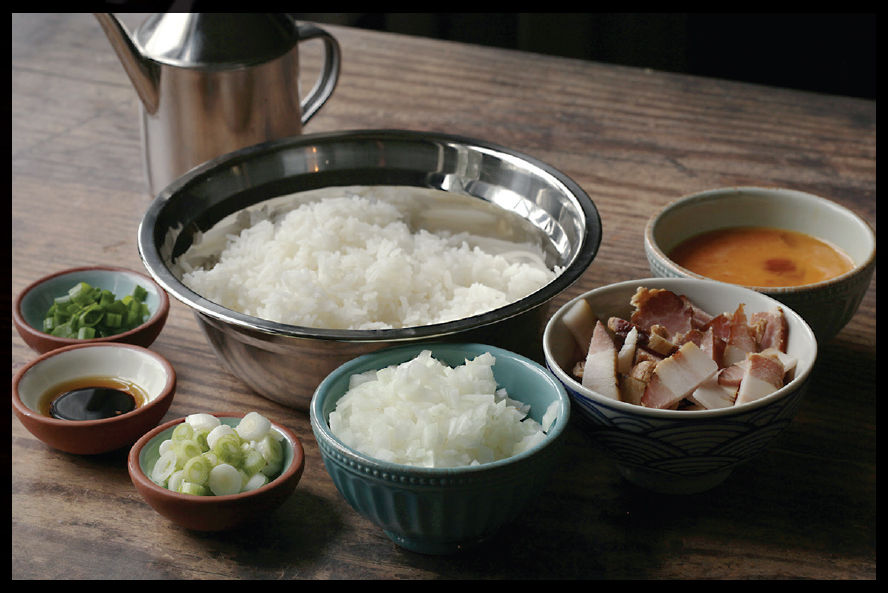
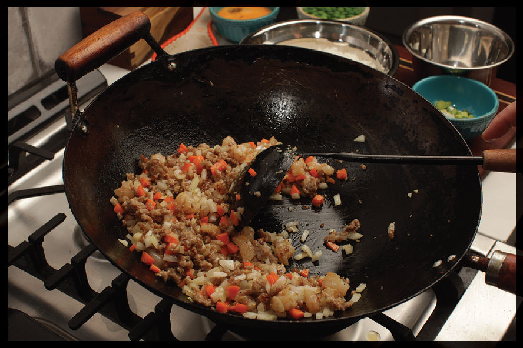
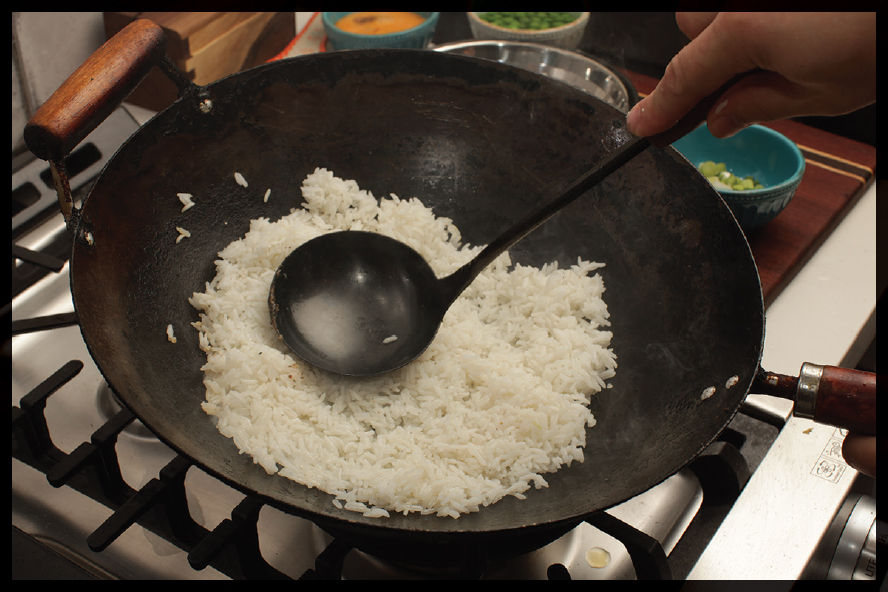
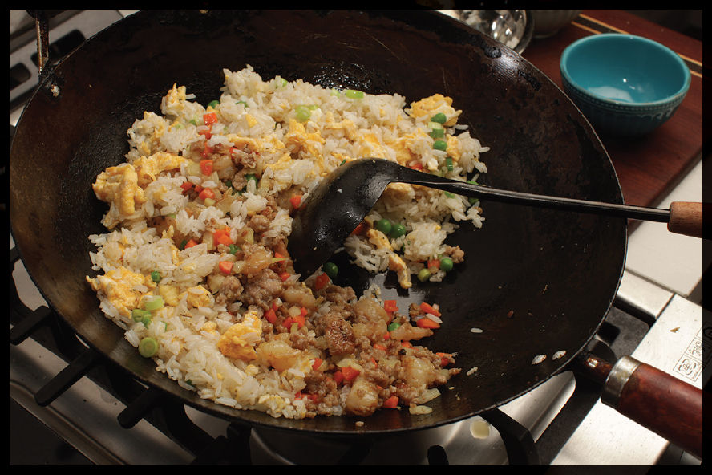

Fried Rice, Step by Step
Here’s the basic blueprint for a wokful of fried rice.
Step 1 • Break Up the Rice

Break the rice up into individual grains if using day-old rice. If using fresh rice, cook it, then spread it on a rimmed baking sheet to cool near a drafty spot or under a desk fan for 1 hour before frying. If the rice is especially sticky, sprinkle it with up to a half teaspoon of cornstarch per cup of rice as you break it up (see the sidebar on the following page).
Step 2 • Gather Your Mise en Place

Your fried rice mise en place should consist of:
•Oil in a dispenser
•Eggs, precracked
•2 to 3 ounces (60 to 90 g) meaty bits (if using)
•4 to 5 ounces (120 to 150 g) vegetables (sorted into separate bowls according to cook time)
•A pound or so (450 g) of broken-up rice
•Aromatics like minced garlic, ginger, scallions, or chiles (if using)
•A few teaspoons (5 to 15 ml) sauces (premixed if using more than one sauce or seasoning)
•Dry seasonings and finishing garnishes (such as herbs and scallion greens)
Decide now whether you want to fry your egg at the start (Method 3 on here) or simply add it to the rice as its finishing (Method 1 or 2 on here)
Step 3 • Start Cooking

Heat up the wok, add some oil, and start stir-frying your ingredients until just cooked through. Start with meaty bits (or eggs, if you are planning on cooking them separately via Method 3 on here), then the vegetables. Cook as many batches as you need to ensure that the wok doesn’t get crowded, transferring the cooked ingredients to a bowl on the side as you go.
Step 4 • Cook Your Rice

Once all the mix-ins have been precooked, reheat the wok, add a little more oil, and stir-fry your rice, using the bottom of a ladle to break up any remaining clumps and hitting it with a kitchen torch if you’re after wok hei. As with all stir-fries, work in as many batches as your cooktop necessitates to keep the wok and rice piping hot as you go. Keep tossing and stirring until the rice starts to firm up and take on a touch of color. If adding an egg via Method 1 or 2 on here, do it now.
Step 5 • Add Aromatics

Add aromatics like garlic, ginger, scallions, and chiles to the rice in the wok and stir-fry until fragrant, then return everything to the wok and add your final seasonings and garnishes (such as soy sauce, fish sauce, salt and white pepper, or chopped herbs). Stir-fry to combine everything, transfer to a serving platter, and serve.
My Rice Is Too Wet!
Sometimes, depending on the specific rice, the weather, and storage conditions, even day-old rice can feel a little moist and sticky and resist breaking up by hand. If you find that your rice refuses to separate into individual grains as you’re preparing for your stir-fry, you can use a trick I learned from Sichuanese chef Wang Gang (definitely check out his YouTube or Weibo channel): add some extra starch. A half teaspoon of rice flour or cornstarch sprinkled over each cup of rice and tossed with it will help capture excess moisture and allow the grains to separate. (Incidentally, the same concept is behind adding powdered cellulose to preshredded cheese, preventing it from reclumping in the bag.)